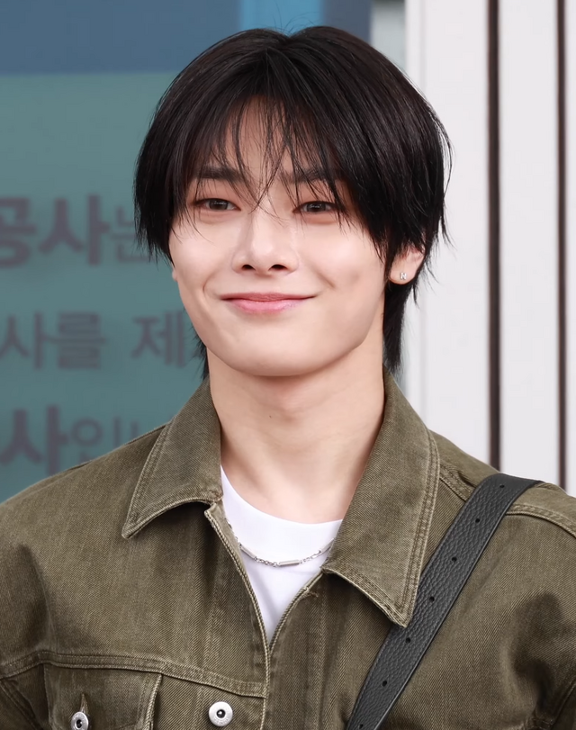

Name: Yang Jeong-in AKA I.N
Birthday: 08 February 2001
Age: 25
MBTI: ISFJ-T
SKZOO: Foxl.Ny
Roles in stray kids: Lead vocalist.
Rachas: Vocal Racha, and Menace family-Racha.
Story: I.N was born in Busan, South Korea, and is the "Maknae" (youngest member) of Stray Kids. A key member of VocalRacha, he is known for his unique, sharp vocal tone and his dramatic growth as a performer since the group's survival show. He joined JYPE in 2016. He is the group's "Desert Fox," famous for his eye smile and his ability to wrap the older members around his finger, earning him the nickname "Maknae on Top." Despite being the youngest, he is incredibly hardworking and was known for wearing braces during the group's early years, which became a trademark look. He is deeply loved by his "hyungs" and is often seen as the group's greatest source of energy and motivation.
Facts: As the youngest, he is doted on by all his "hyungs," though he often acts like the boss. He grew up singing Korean trot music and has a very unique, sharp vocal tone. He is very interested in high fashion and was recently appointed as a brand ambassador for Alexander McQueen. He also has an olders and younger brother.